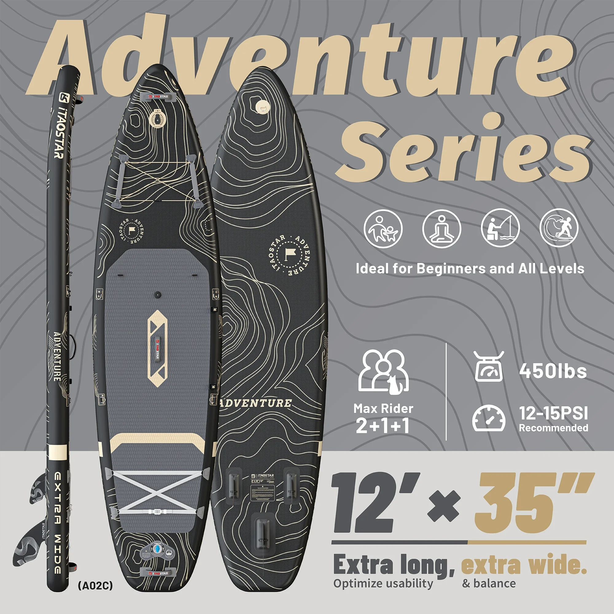
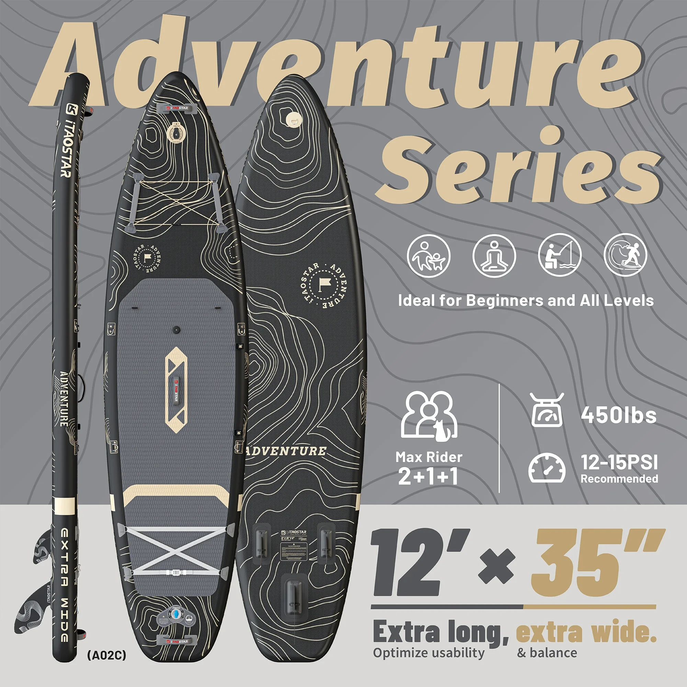

ITAOSTAR A02A Stand-Up-Paddle-Board – Aufblasbares SUP mit Sitz, weiches Surfbrett zum Angeln
Erobern Sie das Wasser und entdecken Sie neue Angelabenteuer mit dem aufblasbaren Stand-Up-Paddle-Board ITAOSTAR A02A. Dieses vielseitige Board verwandelt sich mühelos von einer Angelplattform in ein Freizeitboard und ermöglicht Ihnen die Erkundung von Seen, Flüssen und ruhigen Küstengewässern.
Das A02A ist aus robustem PVC gefertigt und verfügt über ein Soft-Top-Deck, das außergewöhnliche Stabilität und Komfort bietet. Der integrierte Sitz ermöglicht bequemes Paddeln oder Angeln bei gleichzeitiger Kontrolle.
- Robustes PVC-Design: Gebaut, um den Belastungen von Wasserabenteuern standzuhalten.
- Soft-Top-Deck: Bietet eine komfortable und sichere Standfläche.
- Integrierter Sitz: Bietet einen bequemen Ruheplatz beim Paddeln oder Angeln.
Erleben Sie die Freiheit und Vielseitigkeit des Stand-Up-Paddlings mit dem ITAOSTAR A02A. Es ist der perfekte Begleiter für Angler und Wassersportler, die eine stabile, komfortable und anpassungsfähige Plattform suchen, um neue Horizonte zu entdecken.
Das ITAOSTAR A02A Stand Up Fishing Paddle Board ist ein vielseitiges und funktionsreiches aufblasbares Board, das sowohl zum Angeln als auch zum Freizeitpaddeln entwickelt wurde. Es ist aus hochwertigen Materialien gefertigt, um Langlebigkeit und Stabilität auf dem Wasser zu gewährleisten.
- Aufblasbares Design: Das Board lässt sich schnell und einfach aufblasen und ist daher bequem zu transportieren und zu verstauen.
- Weiche Surfboard-Konstruktion: Eine weiche Deckoberfläche bietet Komfort und Halt beim Stehen oder Knien.
- Integrierter Sitz: Inklusive eines bequemen Sitzes für entspanntes Paddeln oder Pausen beim Angeln.
- Angelrutenhalter: Verfügt über einen speziellen Halter, um Ihre Angelrute sicher und griffbereit zu verstauen.
- D-Ringe und Gurte: Mehrere D-Ringe und Gurte bieten Befestigungspunkte für Zubehör wie Kühlboxen, Taschen oder ein Echolot.
Das ITAOSTAR A02A Stand Up Paddle Board wurde mit präzisen Abmessungen entwickelt, um Leistung und Stabilität optimal auszubalancieren.
- Länge: Ungefähr 3 Meter lang
- Breite: Breit genug für hervorragende Stabilität, sowohl für Anfänger als auch für erfahrene Paddler.
- Dicke: Ausreichend dick für gute Stabilität bei gleichzeitig geringem Gewicht.
Das ITAOSTAR A02A Stand-Up-Paddle-Board bietet zahlreiche Vorteile und ist somit die ideale Wahl für Angler und Wassersportbegeisterte:
- Vielseitigkeit: Angeln oder entspanntes Paddeln auf Seen, Flüssen oder ruhigen Meeresgewässern.
- Stabilität: Die große Breite und die robuste Konstruktion gewährleisten eine stabile Plattform, auch beim Auswerfen der Angel oder beim Positionswechsel.
- Transportierbarkeit: Das Board lässt sich leicht entleeren und transportieren und ist somit bequem zu verstauen und zu transportieren. Reise.
- Komfort: Die weiche Deckoberfläche und der mitgelieferte Sitz sorgen für ein komfortables Paddelerlebnis.
Die Verwendung des ITAOSTAR A02A Stand-Up-Paddle-Boards ist unkompliziert. Pumpen Sie das Board zunächst mit einer elektrischen oder manuellen Pumpe (nicht im Lieferumfang enthalten) auf den empfohlenen Druck auf. Bringen Sie Ihre Angelrutenhalterung, D-Ringe und alle weiteren gewünschten Zubehörteile an. Steigen Sie vorsichtig auf das Board und finden Sie einen sicheren Stand. Benutzen Sie das mitgelieferte Paddel (nicht im Lieferumfang enthalten), um sich fortzubewegen.
Denken Sie immer an Ihre Sicherheit: Tragen Sie eine Schwimmweste und achten Sie auf die Wasserbedingungen.